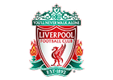

<!DOCTYPE html>
<!--
To change this license header, choose License Headers in Project Properties.
To change this template file, choose Tools | Templates
and open the template in the editor.
-->
<html>
    <head>
        <title>TODO supply a title</title>
        <meta charset="UTF-8">
        <meta name="viewport" content="width=device-width, initial-scale=1.0">
        <link href="css/font-awesome.css" rel="stylesheet" type="text/css"/>
        <link href="bootstrap-3.3.7-dist/css/bootstrap.css" rel="stylesheet" type="text/css"/>
        <link href="css/Stylos.css" rel="stylesheet" type="text/css"/>

        <script src="js/jquery-3.1.1.js" type="text/javascript"></script>
        <script src="bootstrap-3.3.7-dist/js/bootstrap.js" type="text/javascript"></script>

    </head>
    <body>
        <footer id="colorFooter">        
            <div id="footer" class="container" style="background-color:red;">
                <div class="row">
                    <div  class="col-xs-12" >
                        <div class="col-xs-12" >
                            <div id="redondeado" class="neverwalkalone"><h1>YOU'LL NEVER WALK ALONE</h1></div>

                        </div>
                        <div class="col-xs-12" >
                            <center> 
                                
                            </center>
                        </div>
                    </div>

                    <div class="row">
                        <div class="col-xs-12">
                            <center >
                                <a id="letrasBlancas" href="#"> Política de privacidad</a>
                                <a id="letrasBlancas" href="#"> Términos y Condiciones</a>
                                <a id="letrasBlancas" href="#"> Cookies</a>                                                                    
                                <a id="letrasBlancas" href="#"> Ayuda</a>
                                <a id="letrasBlancas" href="#"> RSS Feeds</a>
                                <a id="letrasBlancas" href="#"> Contactenos</a>
                            </center>

                        </div>

                        <div id="letrasBlancas" class="col-xs-12">
                            <center>
                                © Copyright 2016 El club de fútbol Liverpool y Tierras atléticos limitado. 
                                Todos los derechos reservados.
                            </center>
                        </div>

                        <div id="letrasBlancas" class="col-xs-12">
                            <center>
                                Desarrollado y mantenido por LFC Tecnología y Equipo de Transformación.
                            </center>
                        </div>
                        <div id="letrasBlancas" class="col-xs-12">
                            <center>
                                Las Estadísticas de los partidos vienen de Opta Sports Data Limited. 
                                Reproducidas bajo licencia de Football DataCo Limited. Todos los derechos reservados.
                            </center>
                        </div>


                    </div>
                </div>
            </div>
        </footer> 


    </body>
</html>
